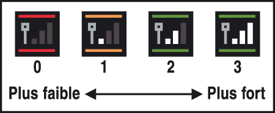

12 |
Communication sans fil DS |
 |
Lisez les informations suivantes pour déposer ou retirer un Pokémon de Pokémon Diamant ou Pokémon Perle.
■ Equipement nécessaire ● Une console Nintendo DS™ ou Nintendo DS Lite ● Une carte DS Nintendo Pokémon Diamant ou Pokémon Perle Note: pour utiliser la communication sans fil DS, la langue choisie dans la version européenne de Pokémon Diamant ou Pokémon Perle doit être la même que celle des données de sauvegarde My Pokémon Ranch. Reportez-vous à la section  Avertissements concernant les communications sans fil
Prenez connaissance des points suivants concernant les communications sans fil:
● L’icône sans fil DS qui apparaît sur le menu principal Nintendo DS ou sur le menu des jeux indique que la fonction de communication sans fil DS peut être utilisée. ● Pendant un jeu utilisant la communication sans fil, l’icône de puissance du signal  NOTE: quand la communication sans fil DS est activée, le témoin d’alimentation de la Nintendo DS clignote à un rythme différent. ● Afin de profiter de la communication sans fil DS dans les meilleures conditions, gardez bien en tête les informations suivantes: ・ La Nintendo DS doit rester dans un rayon de 10 mètres autour de la console Wii, ou à une distance où l’icône de puissance du signal conserve deux barres. ・ Evitez que des personnes ou des obstacles se trouvent entre la Nintendo DS et la console Wii car cela pourrait dégrader la qualité des communications. ・ Si les communications semblent affectées par d’autres appareils (four à micro-ondes, appareils sans fil, etc.), déplacez la console Wii à un autre endroit ou éteignez l’appareil créant les interférences. |
 |
 |
 |